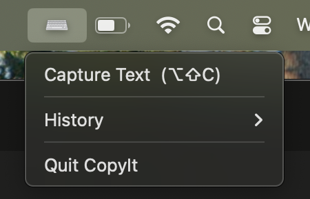

Project
CopyIt
Built because Ctrl+C shouldn't have exceptions.
Motive
Why I Built This
Everyone has run into it — an error message you can't select, a code snippet behind a right-click blocker, a tracking number buried in a no-copy zone, legal text that refuses to budge. The information is right there on your screen, rendered in plain sight, but completely unreachable by normal means. Websites achieve this through CSS user-select: none and JavaScript listeners that intercept selection and right-click events before they reach you.
CopyIt was built to eliminate that friction entirely. The premise is simple: if text is visible on your screen, it should be yours to copy. No workarounds, no developer tools, no hunting through page source. Just copy it.
Stack
Tech Stack
Features
What It Does
Trigger CopyIt with Option + Shift + C and draw a selection box over any text on screen. CopyIt uses macOS's Vision framework to read the text from those pixels via OCR and sends it straight to your clipboard — ready to paste anywhere. It works on any content that's visible: copy-protected websites, locked PDFs, screenshots, and even text rendered inside images. No setup needed each time, no browser configuration, no developer tools.
Roadmap
What's Next
The OCR foundation opens up a few natural directions. A browser extension version would make CopyIt accessible to non-technical users with a single click — no terminal setup required. Per-site toggles could let power users whitelist or restrict behavior on specific domains. On the recognition side, improving accuracy for small or stylized fonts, and adding language detection for multilingual text, would broaden the tool's reach significantly. A cleaner system-tray UI to manage settings without touching config files is also on the list.
Links